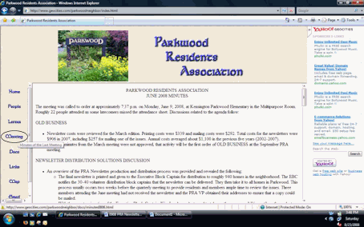

PARKWOOD RESIDENTS ASSOCIATION
FALL 2008 NEWSLETTER
Next Meeting:
Tuesday, September 16, 2008 at 7:30
Kensington Parkwood Elementary School

PARKWOOD RESIDENTS ASSOCIATION
FALL 2008 NEWSLETTER

Next Meeting:
Tuesday, September 16, 2008 at 7:30
Kensington Parkwood Elementary School
|
Neighbors and Friends, At this writing, the Dog Days of August have yet to throw the region into their hot, humid embrace. While we’ve enjoyed idyllic weather this summer, other forces have been at work in the community and throughout the state to harden our perspectives and make us more aware. A number of cars and homes have been vandalized and burglarized this summer. Auto theft was the likely motive for one car break-in on Parkwood Drive, but the thieves were unsuccessful. They have, however, been successful at invading Parkwood homes and stealing GPS devices, and other valuables from vehicles parked on neighborhood streets. We’re living in tough times for many people and I don’t expect that the situation will improve in the near future. While our busy lives tend to disrupt what bonds a community together, it is adversity that oftentimes draws us closer. In that spirit, I urge residents to be mindful of what seems out of place. More importantly, let’s look out for one another. Tell your neighbors when you’re leaving town for extended periods, or just for the weekend. Make sure that you lock your cars, remove valuables, and remove the mount for your GPS device from the windshield. Lock your storm and screen doors even when you’re home. Be mindful of personal safety and take a friend with you on that nighttime walk through the park. On a different note, economic forces and high energy prices have combined to reduce county and state revenues that can be appropriated for future road and infrastructure improvements. As the work on National Naval Medical Center moves into high gear, I encourage everyone in the community to write letters or send e-mail messages to our elected leaders. We need to reinforce with them that the creation of the Walter Reed National Naval Medical Center must be supported by world-class infrastructure that meets the needs of our veterans and their families, and supports neighboring communities such as Parkwood. I have written letters to local, county, state and federal officials expressing my support and voicing concerns regarding the level of funding necessary to adequately move people in and out of the facilities, now and in the future. I would welcome the insight of any community members that have experience in dealing with infrastructure solutions and the associated agencies that oversee them. Templates for these letters have been posted to the PRA website at www.parkwoodresidents.org for others to personalize or copy (Click on "Docs", then "Misc", and then "BRAC-Sample Letters"). Make sure you sign up for the listserv at parkwoodresidents@yahoogroups.com [webmaster note: sign up by emailing parkwoodresidents-subscribe@yahoogroups.com. Once signed up, you can submit emails to parkwoodresidents@yahoogroups.com] and go by the web site at www.parkwoodresidents.org for more information. Enjoy the rest of your summer.
Sincerely, |
Connect with your neighbors at www.parkwoodresidents.org
and ParkwoodResidents@yahoogroups.com
Printed on 100% Recycled Paper
|
VOTE ON NOVEMBER 4TH! It’s no secret that elected officials pay attention to communities with high voter turnout. So, remember to vote on November 4th at Kensington Parkwood Elementary! If you’ve never voted in Parkwood, make sure to register with the Board of Elections - the deadline is October 14th. For information on how to register to vote, apply for an absentee ballot, or change your address, contact the Montgomery County Board of Elections at (240) 777-VOTE or www.montgomerycountymd.gov/Content/Elections |
BEAUTIFICATION COMMITTEE UPDATE
In this edition of the PRA Newsletter you will learn the status of the 2008 PRABC project list and details pertaining to the Wildwood Project. In the next PRA meeting we will discuss proposals for (1) the installation of a bench for the Wildwood Island, (2) a program to promote responsible pet cleanup and (3) the purchase a new Parkwood community sign for the entrance at Beach and Franklin and/or Cedar and Parkwood Drive. We will also discuss a new idea to enable PRA members to submit requests for funding from PRABC for your own projects to enhance the beauty of community spaces.
I am pleased to report the perennial garden at the intersection of Wildwood and Saul Road was completed in August during the "Wednesdays @ Wildwood" evening sessions. The plants are colorful native species that are drought tolerant, deer resistant and butterfly friendly. This project was completed by a 100% volunteer labor with the support of a Keep Montgomery County Beautiful (KMCB) Task Force grant. It is important to recognize the volunteer hours donated to complete the Wildwood Project. If we contracted this work to professional landscapers, it would have added over $1300 to the total project cost [calculated by multiplying $15/hour (industry average) by the estimated 88 man hours in labor spent on the new garden.] This is significant value brought to you by the PRA Beautification Committee.
PRABC 2008 Project List Status:
We have made good progress on the 2008 project list but have had trouble getting members of the neighborhood to participate. This means most of the work falls on a couple of your neighbors. When more than two people participate in any given activity, the work goes very quickly and it is amazing how much you can accomplish in as little as an hour. Please consider donating one hour this year to our community and bring one friend with you.
The six goals we had for the year and their status are:
Information regarding PRABC activities is shared quarterly in this newsletter and as needed in between via the Parkwood Residents e-mail list serve (ParkwoodResidents@yahoogroups.com). If you are not a member of the e-mail list serve but are interested in receiving PRA Beautification Committee updates send me an email or give me a call so I can include you in future PRA Beautification Committee project notifications. I hope to see you during one of our fall projects.
Gail Dalferes Condrey, PRA Beautification Committee Chair
gdalfere@gannett.com
Connect with your neighbors at www.parkwoodresidents.org
and ParkwoodResidents@yahoogroups.com
Printed on 100% Recycled Paper
BRAC UPDATE
At the June meeting, the PRA voted to join the Coalition of Military Medical Center Neighbors (CMMCN), an umbrella group of civic associations formed to ensure that the local communities’ perspectives are kept at the forefront during the plans to renovate and expand Bethesda Naval Hospital as part of the Base Realignment and Closure (BRAC). Bailey Condrey, PRA President, agreed to attend the June CMMCN meeting and report back to the community via the Listserv.
Over the past year, CMMCN has approached local and county officials in a positive manner and expressed expressing support for the local road improvements that will be necessary to facilitate the movement of personnel and patients into and out of the facility with the greatest ease for everyone involved, including citizens of the local communities. They have reiterated that a primary focus was on making sure that veterans and their families, because they deserve no less, could easily navigate their way into Bethesda Naval, without having to spend countless hours tied up in a commute by car, bus or train, while, at the same time, the quality of life for neighboring communities should not be too severely impacted. When the facility becomes operational in 2011, one million more people will be entering and leaving Bethesda Naval on an annual basis.
At present, seven local intersections on the outskirts of Bethesda Naval operate at critical lane volumes, and CMMCN has made one of their main foci to be decreasing the level of vehicular traffic on arterial roadways surrounding the base. An early idea put forth would have created a dedicated entrance/exit to the base from the I-495 Inner Loop. However, this option has not been supported by the Maryland State Highway Administration, for safety and environmental reasons (the SHA’s July 30 discussion paper is posted to the PRA website under "Docs"). On top of this, we need to plan for increased development along Rockville Pike as some commercial development master plans are in the final phases. These will also add traffic to already overburdened roadways.
The State of Maryland has committed $45 million to road improvements serving the military complex and we need to ensure that these funds are appropriated for this work. One estimate for local road improvements put the real price tag at $230 million so we must keep politicians focused on using this money locally.
Discussions from the CMMCN meeting, along with the SHA discussion paper and sample letters for use in writing local, state and federal officials, can be found on the PRA website at www.parkwoodresidents.org. Click on "Docs," then click on "Misc."
* * * * * *
Have a New Neighbor? The PRA is looking for ways to reach out to newcomers in the neighborhood. If you have a new neighbor (or recently moved to the neighborhood yourself), please contact Welcome Committee Chair Kathy Byars to have Kathy or one of her volunteers drop off a PRA welcome packet. Contact Kathy at (301) 530-9441 or to send an email to: kathybyars@mris.com.
|
Vice President/Newsletter Editor: Julie Tierney; jcmtierney@hotmail.com Secretary: Maryann Dillon 301-493-5140; dillem12@verizon.net Treasurer: Gerald Sharp; gbs2001@yahoo.com |
Connect with your neighbors at www.parkwoodresidents.org
and ParkwoodResidents@yahoogroups.com
Printed on 100% Recycled Paper
PARKWOOD’S VIRTUAL COMMUNITY
Come join Parkwood’s “other” community! Get connected to your neighbors on the PRA’s website at www.parkwoodresidents.org and the PRA listserv on Yahoo! Groups.
|  |
Almost half of Parkwood households are connected to each other via the PRA listserv. This e-mail group is open to all residents of Parkwood, and a great way to plan community events, such as block parties and playgroups, and share information, such as the latest news affecting our neighborhood or referrals for service providers. This listserv can save the PRA funds and make Parkwood a safer place to live! Sign on to the list serve and get your neighbor to as well! To subscribe to the listserv, send a blank message to: parkwoodresidents-subscribe@yahoogroups.com. You will receive a confirmation message when you are subscribed. Do not write anything in the subject or body of the message. It will not be seen by anyone and you will not get a response.
HAVE YOU PAID YOUR 2008 PRA MEMBERSHIP DUES YET?
If you missed joining up or renewing your membership in January, we encourage you to send in your application. As a member, you’ll support PRA’s efforts to represent the Parkwood community, share information through meetings and this newsletter, and exchange ideas through our listserv, which is free to everyone in Parkwood, member or not. Please support our efforts for a modest $10 a year.
Name: _________________________________________
Address: __________________________________________________________________
Phone Numbers: (daytime) ____________________________ (evening) _____________________
Email: _________________________________ Member of PRA Listserv? Yes / No (not required)
Enclosed:
____ $10 membership dues
____ $______ donation to Beautification Committee (optional)
Connect with your neighbors at www.parkwoodresidents.org
and ParkwoodResidents@yahoogroups.com
Printed on 100% Recycled Paper
| [Parkwood Home] | [Printable Page] | [Print] |